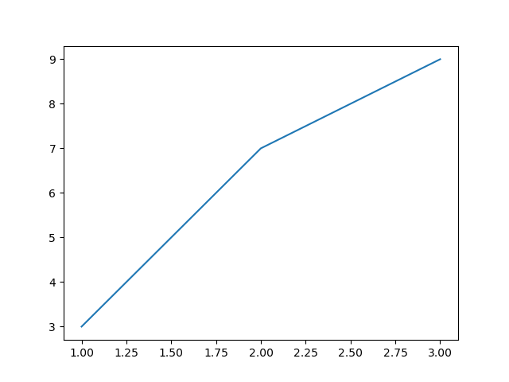
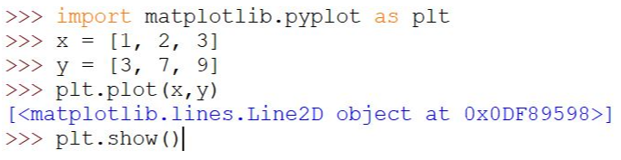
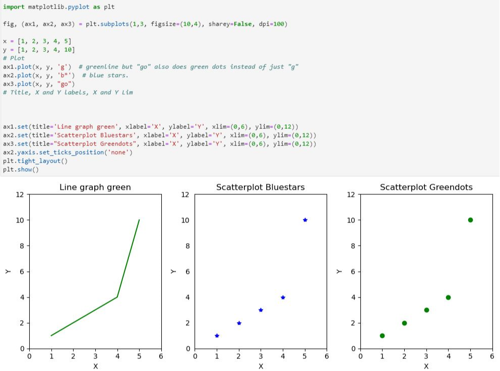
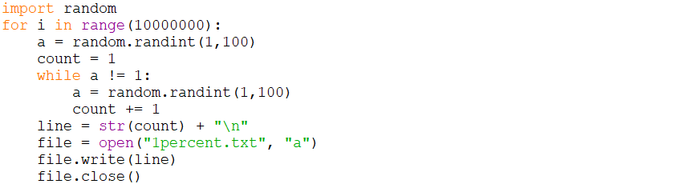
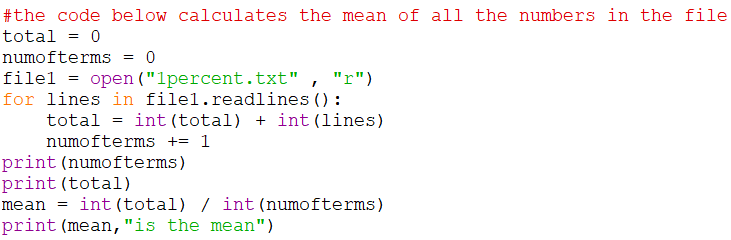
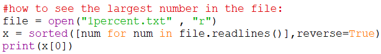
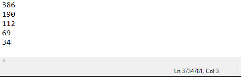
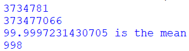
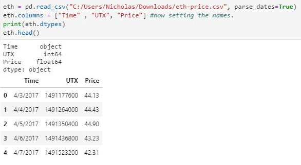
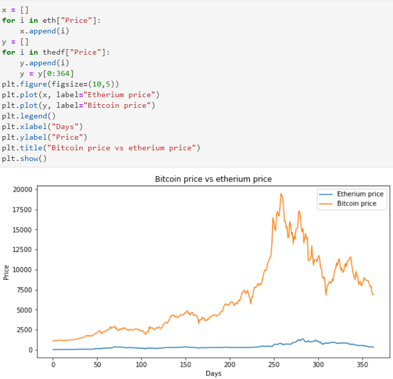

The highlights of using jupyter lab for python
I started using Jupyter lab because while learning python in school, I wanted to go a step further and start learning to use other libraries such as numpy, matplotlib or pandas which was much easier to use using a notebook like jupyter.
My first step in using matplotlib was to create basic graphs either linear or quadratic which could also help me in learning maths since I can easily create a graph using an equation or a set of points. I firstly made a simple linear graph which looked like this.
 The basic linear graph codeAfter learning the absolute basics of matplotlib through courses on freecodecamp.org or random youtube videos that I had found, I learnt other graph styles and the ability to put them in rows , all in the same cell.
Stacking different styles of graphsI was learning interested in probabilities and chaos theory - stating that apparently random events have underlying patterns and I decided to launch an experiment. The experiment would be about finding the average number of times it took to do a certain task. For instance, the odds of a random number generator picking the number 1 out of the range 1 to 100 is theoretically a 1% chance, meaning it would take a hundred tries to land on 1, on average, however, when I ran it a couple of times, you get extremely varying results ranging from getting 1 on the first 3 tries to taking 250 tries. So I wanted to investigate how this tested out in 'real world application'.
What does the code above do? Well, for a very long amount of iterations, a random number is made - 1 to 100 - and the count starts. The purpose of the variable count is to keep track of how many times it took the program to randomly pick the number 1, which theoretically should be 100. If the first random number is not 1, it goes into the while loop until it gets to 1, where it is then appended into a text file with all the other amount of times it took the program to randomly pick 1.
The code above allows me to calculate the average number of times the program took in order to generate the number 1. The file contents are read where they are all added up and the amount of terms there are is also counted. At the end the total,the amount of numbers and the mean are displayed when ran.
The code above is the last piece. It goes through the whole file of numbers, puts it into a list and then prints the first element of the sorted list. This code works by using a list comprehension which I like to use since it can be all put into a single line. You initiate the loop with a traditional for loop then before it the lone "num" is what's being appened to the list x. The 'sorted(reverse=True)' sorts the list, but in ascending order which I didn't want so instead I said reverse=True which puts it in reverse which is descending order. This code allows me to see the largest amount of times the program took to generate the number 1. by selecting the first element in the list by indexing it by using [0].
Now for the actual experiment, I ran the first piece of code for a few minutes and around 3.7 million numbers(attempts) were made,
here are the first 1500 numbers in the file.
I can't really give you access to all the numbers but here is the image of the last lines of the notepad.
So I ran the last two pieces of code (working out the mean and the largest number in the file) and here is what happened:
The first line represents the amount of terms there were, the 2nd line is the total of the all the numbers added up, the third line is the mean and the last line is the most attempts the program took to generate the number 1.
The results show that although literally millions of numbers in range of 1 to 998, the average still is extremely close to the theoretic value of 100 which surprised me since I thought the average at the end was going to be much further away than that. This could refer to chaos theory since although the numbers were made randomly from a certain zone, there still seems to be an underlying pattern here as the average is so close to the theoretical value. It is also worth mentioning that the largest number in the file is almost exactly 10x the average and theoretical value which might just be a coincidence or linked to the probablity and average by I am not sure I would have to conduct more tests to see if there is any correlation or causation. But overall, it was very intersting to see the theoretical value and the real avergae so close together.
To finish off using matplotlib I decided to create a graph of bitcoin vs etherium price by reading into a csv file with all the data and plotting it like so:
Reading the csv file into memory and showing the first five results of the database with .head()In order to create this into a graph after reading the contents of the csv file, I ran a 'for loop' to read all of the prices and put the values into lists to be plotted; after labelling axes and the lines the graph showed up with all of the results.
